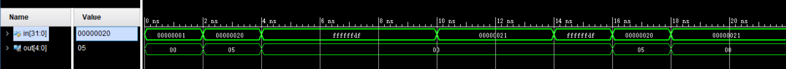

REPORT 1 熟悉 Vivado 环境
实验目的
- 熟悉 vivado 设计流程
- 掌握利用 vivado 创建设计的方法（以实现 4 位加法器为例）
- 掌握编写 testbench 的方法，以及行为仿真方法
- 利用所掌握的知识, 完成以下两道附加题:
- 用结构级描述编写一个 1 位加法器,并进行仿真
- 设计电路实现以下目的: 输入一个 32 位二进制数, 并输出一个 5 位二进制数用来描述该 32 位数字第一个出现 "1" 的位置(从低位开始计数, 从 0 开始)
实验环境
| 操作系统 |
Vivado 版本 |
FPGA 器件芯片型号 |
| Windows 11 |
2017.1 |
xc7vx485tffg 1157-1 |
原理说明
Vivado 设计流程
- 在 Vivado 中创建 RTL 文件
- 进行 HDL 语言编写
- 设置激励仿真
- 综合, 实现
- 生成 bit 文件下载到 FPGA
例题: 4 位加法器
- 首先明确输入和输出. 4 位加法器的输入为两个 4 位二进制数和一个进位信号, 分别定义为 in_0, in_1 和 cin ; 输出为一个 4 位二进制数和一个进位信号, 分别定义为 out 和 cout.
- 写出逻辑表达式, 以行为级描述的方式实现 4 位加法器.
附加题1: 1 位加法器
- 首先明确输入和输出. 1 位加法器的输入为两个 1 位二进制数和一个进位信号, 分别定义为 in_0, in_1 和 cin ; 输出为一个 1 位二进制数和一个进位信号, 分别定义为 out 和 cout.
- 自己在草稿纸上绘出逻辑电路图, 以结构级描述的方式实现 1 位加法器.
附加题2: 32 位二进制数第一个出现 "1" 的位置
- 首先明确输入和输出. 输入为一个 32 位二进制数, 定义为 in ; 输出为一个 5 位二进制数, 定义为 out.
- 写出逻辑表达式, 以行为级描述的方式实现
接口定义
例题: 4 位加法器
module add_4(
input [3:0] in_0,
input [3:0] in_1,
input cin,
output [3:0] out,
output cout
);
附加题1: 1 位加法器
module add_4(
input in_0,
input in_1,
input cin,
output out,
output cout
);
附加题2: 32 位二进制数第一个出现 "1" 的位置
module hw(
input [31:0] in,
output [ 4:0] out
);
调试过程及结果
例题: 4 位加法器

附加题1: 1 位加法器

附加题2: 32 位二进制数第一个出现 "1" 的位置

实验总结
- 本次实验课是我第一次用硬件描述语言语言完成电路设计, 并通过 Testbench 进行仿真. 在这个过程中我熟悉了 Vivado 的使用方法, 也对 Verilog 语言有了初步的了解. 和作为编程语言的 C 语言相比, 硬件描述语言最大的不同在于它是各个模块并行运作的, 此外, Verilog 语言还培养了我的模块化思维, 这对于我以后深入理解计算机学科相关知识打下了坚实的根基.
- 通过 4 位加法器和 1 位加法器, 我分别熟悉了模块的行为级描述和结构化描述方式. 而最后一个附加题通过让我自己设计电路, 进一步帮助我加深理解, 我因此提高了自己独立思考和动手实践的能力, 受益匪浅.
源代码
例题: 4 位加法器
设计文件
module add_4(
//input/output signals and defination
input [3:0] in_0,
input [3:0] in_1,
input cin,
output [3:0] out,
output cout
);
// assignment statement
assign {cout, out} = in_0 + in_1 + cin;
endmodule
激励测试文件
module test_add_4();
reg [3:0] a;
reg [3:0] b;
reg in_carry;
wire [3:0] sum;
wire out_carry;
//instantiate aninitial object of module add_4
add_4 instance_add_4 (
.in_0(a),
.in_1(b),
.cin(in_carry),
.out(sum),
.cout(out_carry)
);
initial begin
a = 4'h1;
b = 4'h0;
in_carry = 1'b0;
end
always begin
#2;
a = $random() % 16;
b = $random() % 16;
in_carry = $random() % 2;
end
endmodule
附加题1: 1 位加法器
设计文件
module add_1(out, cout, in_0, in_1, cin);
input in_0, in_1, cin;
output out, cout;
wire w1, w2, w3, w4;
xor ( w1, in_0, in_1),
( out, w1, cin);
and ( w2, in_0, in_1),
( w3, in_0, cin),
( w4, in_1, cin);
or ( cout, w2, w3, w4);
endmodule
激励测试文件
module test_add_1();
reg a;
reg b;
reg in_carry;
wire sum;
wire out_carry;
add_1 instance_add_1 (
.in_0(a),
.in_1(b),
.cin(in_carry),
.out(sum),
.cout(out_carry)
);
initial begin
a = 1'h1;
b = 1'h0;
in_carry = 1'b0;
end
always begin
#2;
a = $random() % 2;
b = $random() % 2;
in_carry = $random() % 2;
end
endmodule
例题: 4 位加法器
设计文件
module hw(
input [31:0] in,
output [ 4:0] out
);
reg [4:0] i;
always @(*) begin
for(i=0; in[i]==0; i=i+1) begin
end
end
assign out=i;
endmodule
激励测试文件
module hw_test();
reg [31:0] in;
wire [ 4:0] out;
hw instance_hw(
.in(in),
.out(out)
);
initial begin
in = 32'h1;
end
always begin
#2;
in = $random() % 2^32;
end
endmodule
{kind=link}